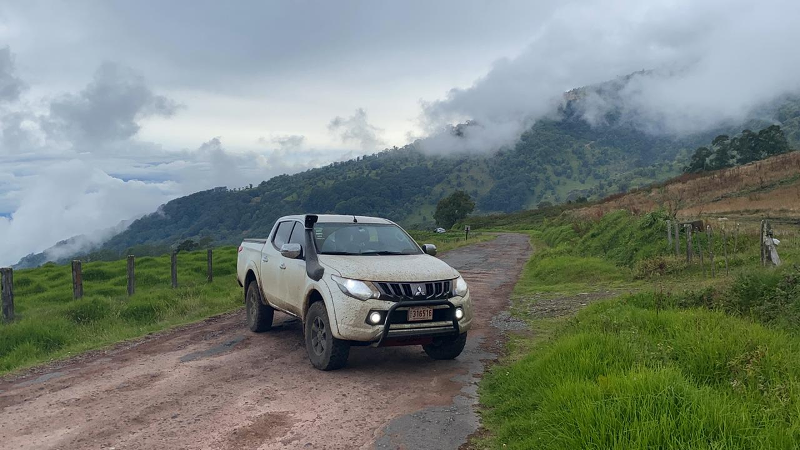
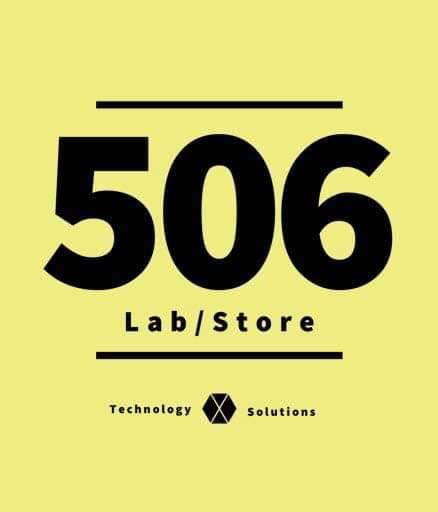

TourisTICO
TourisTICO is a blog-type website about discovering Costa Rica with my dog, my truck, and my friends.
View on InstagramI design, build and maintain websites and web apps using modern JavaScript and accessible design. Based in Costa Rica — available for remote work.
Download résuméThese are my projects in development below. More information can be found at albertoobando.com.

TourisTICO is a blog-type website about discovering Costa Rica with my dog, my truck, and my friends.
View on Instagram
506 Lab Store specializes in selling and repairing electronic devices. See the store for services and product availability.
View on FacebookSpooky Glitter is an e‑commerce site for handmade goods; customers can browse items and make purchases.
See InstagramSee my complete work experience on LinkedIn.
Tecnológico de Costa Rica
February 2019–July 2021
Managed different projects to ensure quality assurance and delivery of successful results. See albertoobando.com for details.
Tecnológico de Costa Rica
February 2018–July 2018
Assisted professor Rodrigo Nuñez Nuñez with teaching and grading.
Key contributions:
A blend of formal study, applied projects and continuous professional learning — combining technical foundations with modern AI-enabled workflows.
Focused on software engineering, algorithms and signal processing. Delivered projects combining UX and performance.
Applied accounting and small-business finance workflows that support client billing and operations.
Foundational training in communication and pedagogy; early digital projects and teaching experience.
Core skills and AI-enabled workflows I use to deliver faster, more robust web projects.
Want to leverage AI in your next project? Let’s talk
“Alberto is reliable and delivers quality work on schedule.” — Client, 506 Lab Store
“Great communication and attention to detail.” — Course instructor